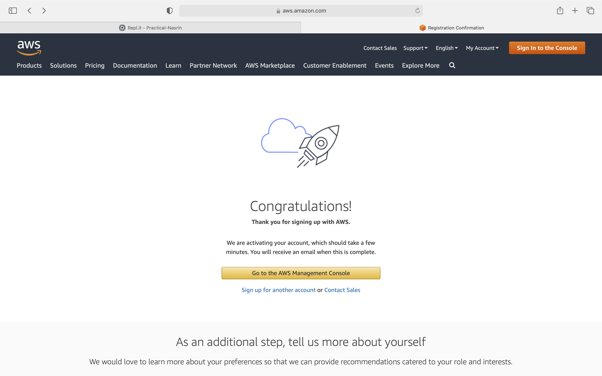
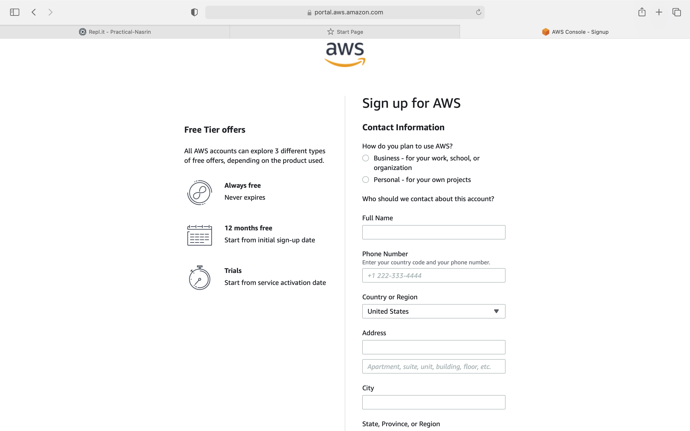
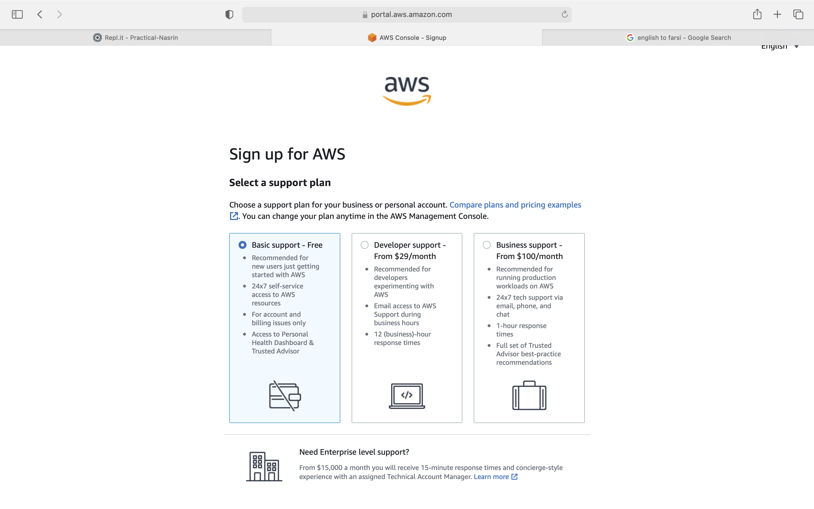
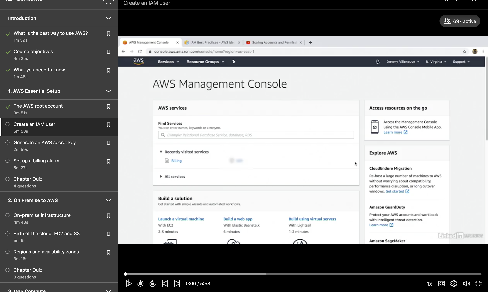
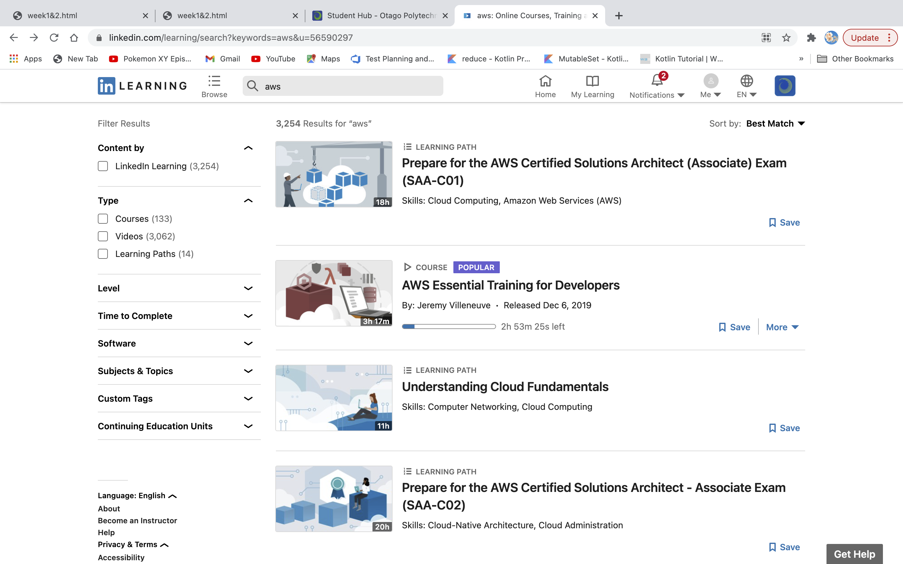

Week1 & Week2
Week1
In week one, our group had a chat with grason about our projrct, our project is about AWS.
I decided to get AWS certificate as well, In this week I had a resarch about AWS and I found some usefull website.
In following website I leant about cloud computing, AWS and also advantage and disadvantage of AWS
What is AWS? Amazon cloud Services Tutorial .
In addition I found some more website and youtube video to get better underestanding of AWS and Cloud computing.
What is AWS | What is Amazon Web Services | AWS Tutorial for Beginners | AWS Training | Simplilearn
AWS Architect Certification Training
Amazon Web Services (AWS)
AWS Tutorial for Beginners: A Step-by-Step Guide
AWS Tutorial | What is AWS | AWS Training for Beginners | Intellipaat
Week2
In this week I prepared my portfollio and wrote my first week notes and push it in github. Also we had a standup meeting within our group.
I started to do Module 1 in Build your future in the AWS Cloud website, it consist of 11
module, each module have one vedio and some information about AWS and also it have quiz. I,ve done first module and fist quiz. First module
contains informaton about benefit of cloud computing and cloud computing deployment models, and
I learnt There are three cloud computing deployment models 1.cloud-based, 2.on-premises, and 3.hybrid.
In addition, there was some resources to learn more about the concepts that were in Module 1.
Second class of this week was online, we had a online meeting, after meeting I try to continue
AWS Training I did first module and then I started second module, it was
about Scaling Amazon EC2.
I learnt EC2 instances which is like employees and that they serve client requests, with EC2, I can dynamically spin up and spin down virtual servers called EC2 instances.
. Amazon EC2 provide virtual computing environments in the cloud. . Amazon EC2 is scalable, which means we can add more instances when needed, and terminate these instances when we do not needed.
We can lunch the instance and select a template with basic configuration, then we can select the instance type, AWS has different type of
instances which is grouped under an instance family and optimized for different types of tasks. In tutorial mentioned about different
instance families in EC2 which are:
compute optimized = this instances are for compute-intensive tasks like gaming servers,performance computing or HPC.
general purpose = this instance provide a good balance of compute, network resources and memory.
memory optimized = this instances are good for memory-intensive tasks.
storage optimized = Tis instance is good for workloads that requaire high performance for locally stored data.
accelerated computing = This instance is good idea for for floating point number calculations, data pattern matching or graphics processing,
because they use hardware accelerators.
In addition, we can specify security Settings to control the network traffic, it can flow into and out of our instance.
Also I learnt about load balancer, load balancer is an application that takes in requests and routes them to the instances to be processed. Also we can scale our EC2 instances
either horizontally by lunching new instances and adding this new instances to the pool, or vertically by resizing the instance.
I've done module 2 and I did quize about module 2
After finishing a module 2, I tried to learning aws in
linkin-lerning to more learning about AWS.
I tried to start the AWS from introduction and I learnt how can I signup in AWS via aws.amazon.com. Also I activate my IAM user
by edit "IAM User and Role Access to Billing Information" on Account Settings and then tick the activate IAM access box and then update it.






Conclusion
I sepent lots of time in this week to researching about aws to get more knowledge about it.
I found some useful website about AWS and follow them to get better underestanding. I could signup and login to AWS
and I could create root account.